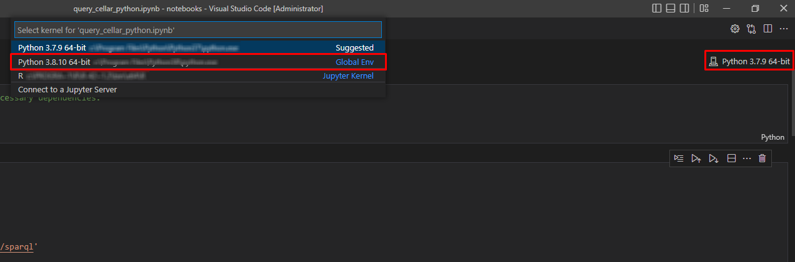
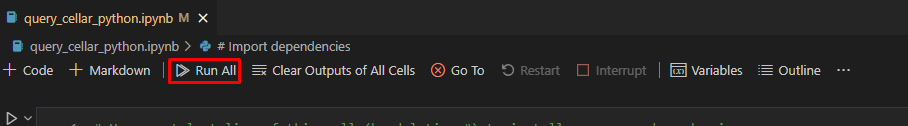
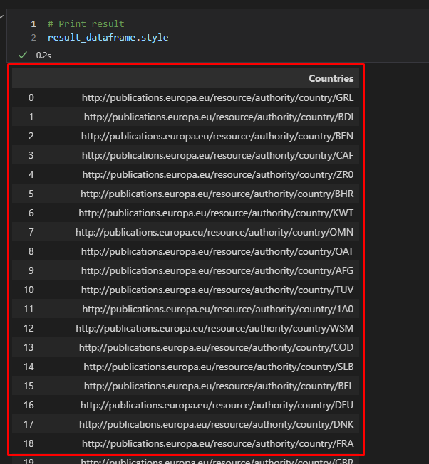

Jupyter Notebook – Python
This section shows an example of using TED data in a Python Jupyter Notebook. The Jupyter Notebook is an application for creating and sharing computational documents. Python represents a programming language for writing computational documents. To realize the proposed scenario, it is necessary to install the special tools and use the Python code that will perform a query to the Cellar endpoint and display the results in tabular form (Working with Jupyter Notebook).
To run Python sample:
-
Download Jupyter Notebook file:
-
Download & Install Python 3.8:
-
Open Jupyter Notebook file with your favourite IDE (e.g. VS Code editor):
-
In the IDE, select interpreter for Python that was installed
Example in VS Code:

-
Install dependencies:
-
Use OS command line and type:
pip install ipykernel sparqlwrapper pandas
-
-
Run All the Notebook Cells (example in VS Code):

After the execution on last output cell we can see results:

References
-
“Working with Jupyter Notebooks in Visual Studio Code.” n.d. Visual Studio Code. https://code.visualstudio.com/docs/datascience/jupyter-notebooks